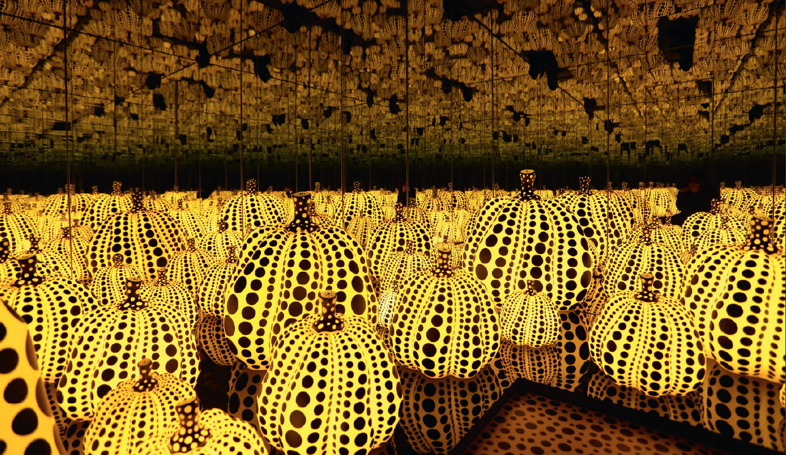

Yayoi Kusama’s ‘Dots Obsession’ series of installations reconfigures her trademark polka dots and mirrors — along with huge, amorphous inflatable objects — in response to specific sites. As with Reach Up to the Universe, Dotted Pumpkin 2011, reflection is presented in two modes: formally, in the continuity of the balloons’ red-and-white polka-dot pattern on the gallery walls, floor and ceiling, and in the infinite effect created by floor-to-ceiling mirrors. Both installations incorporate the viewer as a crucial element.
Dots Obsession visually approximates the hallucinations Kusama reportedly suffered as a child, in which the entirety of her surrounding space was covered with repeating patterns. The installation also reveals the artist’s careful attention to the construction of space through colour and form, and to the play of light and perspective accomplished by repeating a few simple devices.
Kusama first explored installation in her 1963 solo exhibition ‘Aggregation: One Thousand Boats Show’ at Gertrude Stein Gallery in New York. Her innovation lay in configuring the entire exhibition as a single work, which consisted of one of her ‘Accumulation’ sculptures — a rowboat, covered in soft, phallic protuberances — presented in a space, the walls of which were covered in 999 reproductions of a photograph of the same sculpture.